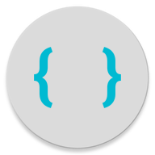

An Ace User
Ace is the High-Performance code editor for the web. It works great, is easy to embed, very customizable, and uses Solarized Dark.

All The Languages
PureCode supports many languages. To List a few of the most popular, C++, C, C#, CSS, HTML, Java, JavaScript, JSON, PHP, Python, SQL, and XML.

Award Winning Material
Material Design is "the new user interface" accross many new apps and sites. PureCode is a code editor with great material design.
Lets Go
Lets Get Going!